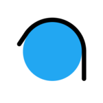

RubbrBand
Interface
The Iterative Design Process
For this assignment, I worked in a team of 4 to select a startup company and iteratively design an interactive mockup for their web application.
I wanted to better understand and learn the design process, what it entailed, and gain experience working through the troubles and difficulties that my team and I faced. We looked though a list of startups and ended up selecting the one which caught our eye the most:
RubbrBand
The Startup
RubbrBand provides a web interface for extracting code repositories and reporting dependency information relating to machine learning. Users of this application can upload a link to projects in github and have this app perform a full scan of what packages will be needed within their environment to build and manage their project.
As many of us in the group were familiar with and had struggled with the complicated process of setting up neural networks and machine learning models firsthand, we were really curious about the product RubbrBand was developping, and worked hard to make an interface that would help them address some of the issues of machine learning.
Initial Ideas and Sketches
LoFi Wireframes
HiFi Prototype
Feedback and Improvements
We had two iterations of receiving feedback and critiques for improvements. The first was done in our course, during our studio hours where our peers looked through our project and provided comments. The other is when we submitted our prototype to UserTesting with explicit tasks and received video feedback.
Studio Critiques
When receiving our studio critique, we obtained some valuable feedback which was then used to improve our design.
Furthermore, people thought the training page should have more variation when it comes to colors to better represent the states of training, and there were also some reused colors that made some actions confusing. Users did like the use of red for the stop button to emphasize the consequences associated with pressing it given how long training models can take. The color scheme mostly received positive feedback.
There were some suggestions to improve contrast with Github logos on the training dashboard, and a way to identify which page in the side menu the user is currently on. Some comments were in regards to the help page and how the format and hierarchy was not consistent, some of the items were redundant with the FAQ section. Users also thought it would be nice to have a way to visualize the time remaining in training instead of a percentage as training time can vary a lot depending on many factors.
In the end, we made a lot of changes to our prototype based on these critiques, adding more interactivity, showing the progress through more visual means, cleaning up the hierarchy and making everything consistent.
Once we felt we were ready to move on, we submitted our Figma prototype to UserFeedback.
UserFeedback Critiques
For our UserFeedback submission, we included tasks we asked the users to complete on our prototype. These tasks being:
- logging in
- checking what features they currently have access to under the gold subscription
- checking the status of a CNN they have already uploaded
This provides a pretty comprehensive walkthrough of almost every screen in our hifi, with the one exception being the upload page, which was not interactive and thus could not really be tested thoroughly.
All users were successful in completing these tasks and rated them quite easy. You can see their recorded interactions here:
One aspect we would like to improve is to make it easier to see which features a user currently has access to. Currently, users only can view their features by going to the "Upgrade" screen, which a couple users described as unintuitive. One user suggested to change this word to "Subscription" so that users checking their current subscription and users wishing to upgrade would both click there intuitively. Another user suggested having current features visible on the profile screen.
Final Product
In conclusion, feedback and collaboration were integral to success on this project. It was very useful to be able to learn from classmates who critiqued our interface and then decide as a team how we want to implement changes.
It was also an important step to be able to get user feedback from UserTesting.com which gave us insight from anonymous users on how people would react when using our design.
Lastly, it was an exciting last step to be able to actually contact this startup and share our work with them to see what they think. It will be very interesting to see how this company reacts to the design we made for the interface of their application.